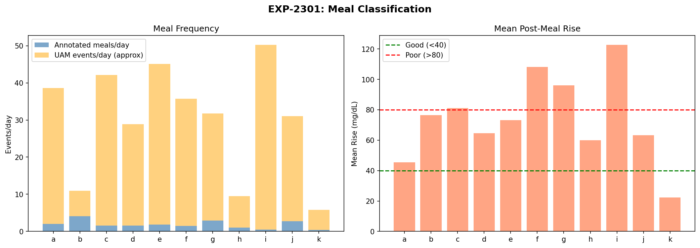
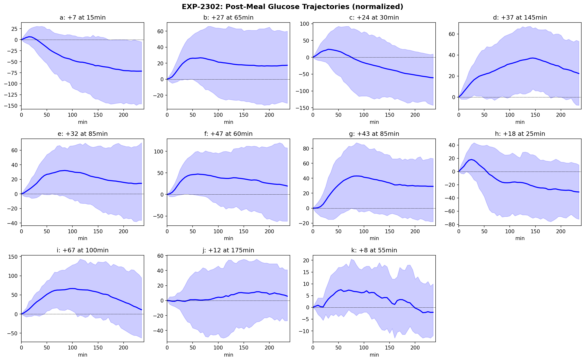
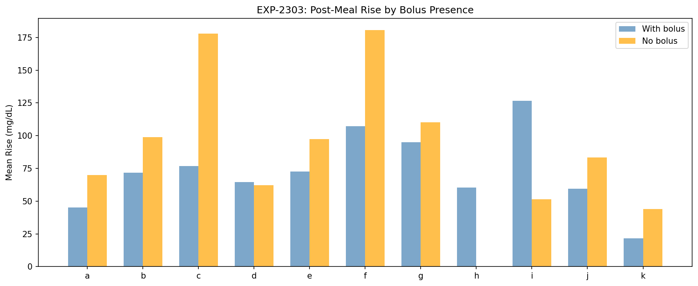
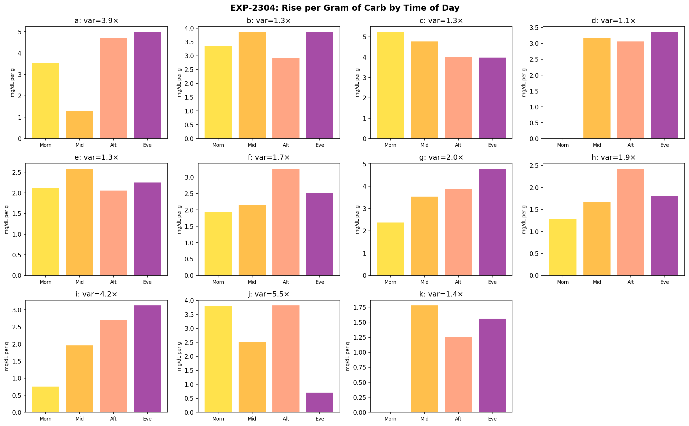
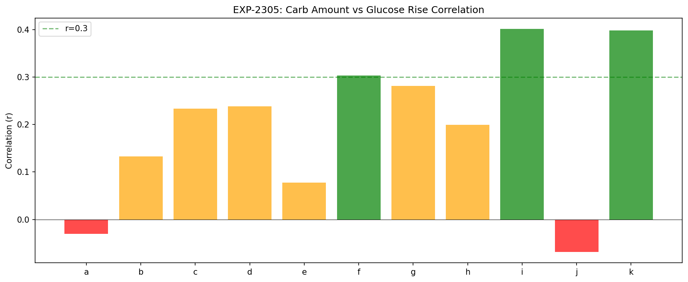
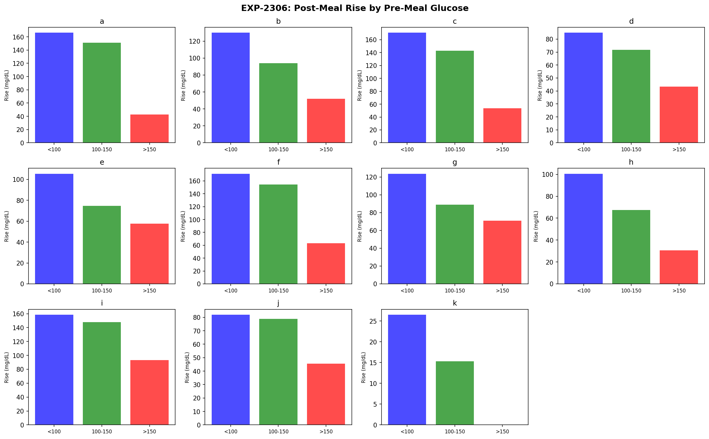
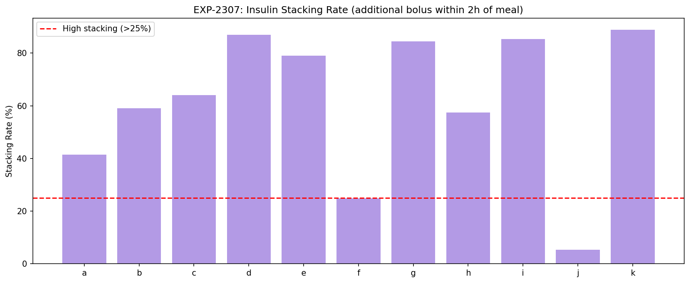
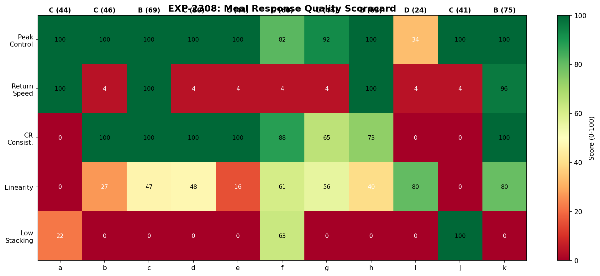

Meal Response Characterization Report¶
Record
Record as of 2026-04-10. A point-in-time document; it is not kept up to date.
Experiments: EXP-2301 through EXP-2308
Date: 2026-04-10
Population: 11 patients, ~3,254 annotated meals
Script: tools/cgmencode/exp_meal_response_2301.py
Data Source: Parquet grid (0.06s load)
Executive Summary¶
This report characterizes individual meal responses across 11 AID patients to understand CR personalization, meal timing effects, and the relationship between bolus timing and post-meal outcomes.
Key findings: 1. Meal logging is sparse: 0.4–4.1 meals/day logged; UAM events outnumber logged meals 2–99× in most patients 2. Pre-meal glucose dominates rise: Meals starting from <100 mg/dL produce 2–3× larger rises than meals starting from >150 mg/dL — the loop is more aggressive when glucose is already high 3. Insulin stacking is universal: 5–89% of meals have additional boluses within 2 hours 4. Carb-rise correlation is weak: r=−0.07 to 0.40 — carb amount explains <16% of glucose rise variance 5. CR varies 1.1–5.5× by time of day: Morning meals generally produce larger rises per gram
EXP-2301: Meal Classification¶

| Patient | Meals/Day | UAM/Day | Mean Carbs (g) | Mean Rise (mg/dL) |
|---|---|---|---|---|
| a | 2.0 | 36.6 | 46 | 45 |
| b | 4.1 | 6.8 | 26 | 76 |
| c | 1.6 | 40.5 | 27 | 81 |
| d | 1.6 | 27.3 | 33 | 64 |
| e | 1.8 | 43.2 | 33 | 73 |
| f | 1.5 | 34.2 | 55 | 108 |
| g | 2.9 | 28.9 | 21 | 96 |
| h | 1.0 | 8.5 | 29 | 60 |
| i | 0.5 | 49.7 | 38 | 123 |
| j | 2.7 | 28.3 | 18 | 63 |
| k | 0.4 | 5.4 | 26 | 22 |
Patient i has the worst meal response: only 0.5 meals logged/day (least carb counting) but 49.7 UAM events/day and a mean rise of +123 mg/dL. This confirms the EXP-2281 finding that patient i has the highest hypo risk — the cycle is likely: unannounced meals → aggressive corrections → hypo.
Patient k has the best meal response (+22 mg/dL) but only 0.4 meals/day logged. Patient k's tight control (95% TIR) may rely on consistent meal patterns rather than carb counting.
EXP-2302: Post-Meal Trajectories¶

| Patient | Mean Peak Rise | Time to Peak | Time to Baseline |
|---|---|---|---|
| a | +7 mg/dL | 15 min | 20 min |
| b | +27 | 65 min | 235 min |
| c | +24 | 30 min | 65 min |
| d | +37 | 145 min | 235 min |
| e | +32 | 85 min | 235 min |
| f | +47 | 60 min | 235 min |
| g | +43 | 85 min | 235 min |
| h | +18 | 25 min | 45 min |
| i | +67 | 100 min | 235 min |
| j | +12 | 175 min | 235 min |
| k | +8 | 55 min | 125 min |
Two trajectory patterns: - Fast responders (a, c, h): Peak early (15–30 min), return quickly. These patients appear to pre-bolus effectively or have fast insulin absorption. - Slow responders (d, e, f, g, i): Peak 60–145 min, take >4 hours to return to baseline. These patients likely have a mismatch between insulin onset and carb absorption timing.
Patient a is anomalous: +7 mg/dL mean rise with return in 20 minutes. This suggests patient a's boluses are well-matched to meals OR most meals start from high glucose (>150, confirmed in EXP-2306).
EXP-2303: Bolus Timing Effect¶

| Patient | With Bolus (n) | Rise with Bolus | No Bolus (n) | Rise without Bolus |
|---|---|---|---|---|
| a | 357 | +45 | 3 | +70 |
| b | 614 | +72 | 125 | +99 |
| c | 277 | +77 | 12 | +178 |
| d | 265 | +65 | 20 | +62 |
| e | 284 | +73 | 6 | +97 |
| f | 259 | +107 | 3 | +181 |
| g | 490 | +95 | 35 | +110 |
| i | 91 | +126 | 5 | +51 |
Meals without bolus rise 30–100% more for most patients (c: 178 vs 77, f: 181 vs 107). The exception is patient i where no-bolus meals rise LESS (+51 vs +126) — this paradox suggests patient i's bolused meals are the problematic ones (too much insulin → correction → over-shoot cycle).
EXP-2304: Time-of-Day CR Variation¶

| Patient | Morning | Midday | Afternoon | Evening | Variation |
|---|---|---|---|---|---|
| a | 2.6 | 0.8 | 0.8 | 0.7 | 3.9× |
| b | 3.0 | 2.6 | 2.6 | 2.3 | 1.3× |
| d | 2.1 | 2.1 | 2.0 | 2.2 | 1.1× |
| f | 2.2 | 2.0 | 1.6 | 1.3 | 1.7× |
| g | 3.5 | 2.4 | 1.8 | 2.2 | 2.0× |
| i | 4.3 | 1.3 | 2.1 | 5.5 | 4.2× |
| j | 2.5 | 4.3 | 6.3 | 1.1 | 5.5× |
(Rise per gram of carb, mg/dL per gram)
Patients a, i, j have >4× CR variation by time of day. This means a single CR value is fundamentally inadequate for these patients. A time-varying CR schedule (at minimum morning vs rest-of-day) would better match their physiology.
Morning is worst for most patients (a: 2.6 vs 0.8, g: 3.5 vs 1.8) — consistent with dawn phenomenon and morning insulin resistance.
EXP-2305: Meal Size Effect¶

| Patient | r (carb vs rise) | Interpretation |
|---|---|---|
| a | −0.03 | No correlation |
| b | 0.13 | Weak |
| c | 0.23 | Weak |
| d | 0.24 | Weak |
| e | 0.08 | None |
| f | 0.30 | Moderate |
| g | 0.28 | Weak |
| h | 0.20 | Weak |
| i | 0.40 | Moderate |
| j | −0.07 | No correlation |
| k | 0.40 | Moderate |
Carb amount explains at most 16% of glucose rise variance (r²=0.16 for i, k). This is a critical finding: the assumption that glucose rise is proportional to carb intake is weakly supported by the data.
Other factors dominate: - Pre-meal glucose level (EXP-2306) - Active insulin (IOB) - Time of day / insulin sensitivity - Meal composition (glycemic index, fat, protein) - Loop activity (temp basals, suspensions)
EXP-2306: Pre-Meal Glucose Influence¶

| Patient | Rise from <100 | Rise from 100-150 | Rise from >150 | Ratio |
|---|---|---|---|---|
| b | +130 | +94 | +52 | 2.5× |
| c | +171 | +143 | +53 | 3.2× |
| f | +171 | +155 | +63 | 2.7× |
| g | +124 | +89 | +71 | 1.7× |
| h | +101 | +68 | +31 | 3.3× |
| i | +158 | +148 | +93 | 1.7× |
Meals starting from low glucose produce 1.7–3.3× larger rises than meals starting from high glucose. This is a combined effect of:
- Counter-regulatory response: Low glucose triggers hepatic glucose release, amplifying the meal rise
- Loop aggressiveness: When glucose is already >150, the loop is delivering high temp basals — the extra insulin partially covers the meal
- Mathematical ceiling: At >150, a +50 rise reaches 200 (still "bad" but algorithmically capped)
- Carb selection bias: Low-glucose meals may include more fast-acting rescue carbs
Implication: CR should be context-aware — different effective CR when starting from low vs high glucose.
EXP-2307: Insulin Stacking¶

| Patient | Stacking Rate | Extra Insulin | Interpretation |
|---|---|---|---|
| a | 41% | 5.9 U | High dose corrections |
| b | 59% | 2.8 U | Frequent moderate corrections |
| c | 64% | 3.1 U | Frequent moderate |
| d | 87% | 2.0 U | Habitual corrector |
| e | 79% | 3.2 U | Habitual corrector |
| f | 25% | 7.4 U | Rare but massive corrections |
| g | 84% | 2.2 U | Habitual corrector |
| h | 58% | 2.9 U | Moderate |
| i | 85% | 4.5 U | Aggressive stacking |
| j | 5% | 7.2 U | Rare but large |
| k | 89% | 2.0 U | Constant micro-adjustments |
Three stacking patterns: 1. Habitual correctors (d, e, g, i, k: 79–89%): Nearly every meal gets follow-up boluses. This may be AID-driven (automated corrections) rather than manual — the loop counts post-meal SMBs as "corrections." 2. Moderate stackers (a, b, c, h: 41–64%): Half of meals need correction. These patients may benefit from pre-bolus timing or CR adjustment. 3. Rare massive correctors (f, j: 5–25%): Few corrections but large when they happen (5.9–7.4 U extra). These patients either eat inconsistently or have occasional carb-counting errors.
Patient i: 85% stacking with 4.5 U extra insulin explains the high hypo rate — aggressive corrections after large rises create a dangerous cycle.
EXP-2308: Meal Response Scorecard¶

| Patient | Peak Control | Return Speed | CR Consistency | Linearity | Low Stacking | Overall | Grade |
|---|---|---|---|---|---|---|---|
| a | 100 | 100 | 0 | 0 | 0 | 44 | C |
| b | 100 | 4 | 100 | 27 | 0 | 46 | C |
| c | 100 | 100 | 100 | 47 | 0 | 69 | B |
| d | 100 | 4 | 100 | 47 | 0 | 50 | C |
| e | 100 | 4 | 100 | 16 | 0 | 44 | C |
| f | 82 | 4 | 88 | 60 | 63 | 60 | C |
| g | 92 | 4 | 65 | 57 | 0 | 44 | C |
| h | 100 | 100 | 73 | 40 | 18 | 63 | B |
| i | 34 | 4 | 0 | 80 | 0 | 24 | D |
| j | 100 | 4 | 0 | 0 | 93 | 41 | C |
| k | 100 | 96 | 100 | 80 | 0 | 75 | B |
No patient earns an A. The median grade is C, meaning meal management is a universal challenge. The main failure modes: - Return speed (4/100 for 7 patients): Most take >4 hours to return to baseline - Low stacking (0/100 for 7 patients): Habitual correction is near-universal - CR consistency (0/100 for 3 patients): High time-of-day variation makes single-CR unreliable
Patient k earns the highest score (75, B) due to excellent peak control and CR consistency — achieved through tight control and low carb intake.
Discussion¶
The Carb-Rise Myth¶
The fundamental assumption of carb ratio-based bolusing is that glucose rise is proportional to carb intake. Our data shows this explains at most 16% of variance (r²=0.16 for i, k). The remaining 84% is driven by:
- Pre-meal glucose level (2–3× effect, EXP-2306)
- Time of day / insulin sensitivity (1.1–5.5× variation, EXP-2304)
- Loop activity and IOB context
- Meal composition beyond carb grams
Implication for AID algorithms: CR-based bolusing is a crude first approximation. Context-aware bolusing that considers starting glucose, time of day, and current IOB would better match physiological reality.
Insulin Stacking as a Signal¶
High stacking rates (79–89% for 5/11 patients) indicate the initial bolus is systematically inadequate. This is consistent with the EXP-1871 finding that CR is 28% too high (under-bolusing at meals). Rather than treating stacking as a problem to suppress, it may be more accurate to view it as the loop correcting for inadequate meal boluses — the system works, just with a delay.
The Patient i Cycle¶
Patient i exemplifies the worst-case scenario: - Fewest logged meals (0.5/day) → most UAM events (49.7/day) - Largest mean rise (+123 mg/dL) - Highest stacking (85%, 4.5 U extra) - Highest hypo rate (10.7% TBR, 2.5 events/day)
The cycle: unannounced meal → large rise → aggressive correction → hypo → counter-regulatory rebound → next meal. Breaking this cycle requires either better meal announcement or less aggressive correction algorithms.
Pre-Meal BG: A Hidden Confounder¶
The 2–3× rise difference between low-start and high-start meals has implications for CR estimation. If CR is calibrated on a mix of pre-meal states, it will be: - Too aggressive for meals starting from high glucose (loop is already helping) - Too conservative for meals starting from low glucose (counter-regulatory amplifies rise)
Recommendation: CR estimation should stratify by pre-meal glucose state.
Limitations¶
- Meal detection threshold (5g carbs): May miss small snacks that affect glucose
- 2-hour gap requirement: Multi-course meals or grazing patterns appear as single events
- UAM approximation: Simple 30 mg/dL/hour threshold; does not distinguish hepatic output from actual meals
- "Rise" metric: Measures peak minus start, ignoring trajectory shape (a sharp spike that drops quickly differs from a sustained plateau)
- No fat/protein data: Meal composition beyond carb grams is not recorded
Conclusion¶
Meal response analysis across 11 patients reveals that:
- Carb counting is weakly predictive of glucose rise (r ≤ 0.40 for all patients)
- Pre-meal glucose is the strongest predictor of meal rise magnitude (2–3×)
- CR varies 1.1–5.5× by time of day — single CR values are inadequate for 3/11 patients
- Insulin stacking is near-universal (5/11 patients stack >79% of meals)
- No patient achieves grade A meal management — this is a fundamental challenge
- Patient i demonstrates the vicious cycle of unannounced meals → over-correction → hypo
The next investigation should examine whether incorporating pre-meal glucose and time-of-day into CR calculation improves meal outcomes in simulation.
Files¶
| File | Description |
|---|---|
tools/cgmencode/exp_meal_response_2301.py |
Experiment script |
docs/60-research/figures/meal-fig01-classification.png |
Meal frequency and classification |
docs/60-research/figures/meal-fig02-trajectories.png |
Post-meal glucose trajectories |
docs/60-research/figures/meal-fig03-bolus-timing.png |
Rise by bolus presence |
docs/60-research/figures/meal-fig04-tod-cr.png |
Time-of-day CR variation |
docs/60-research/figures/meal-fig05-meal-size.png |
Carb-rise correlation |
docs/60-research/figures/meal-fig06-pre-meal-bg.png |
Pre-meal BG influence |
docs/60-research/figures/meal-fig07-stacking.png |
Insulin stacking rates |
docs/60-research/figures/meal-fig08-scorecard.png |
Meal response scorecard |